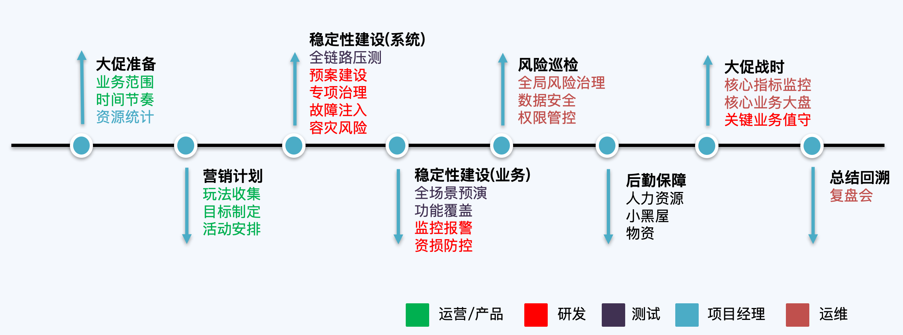
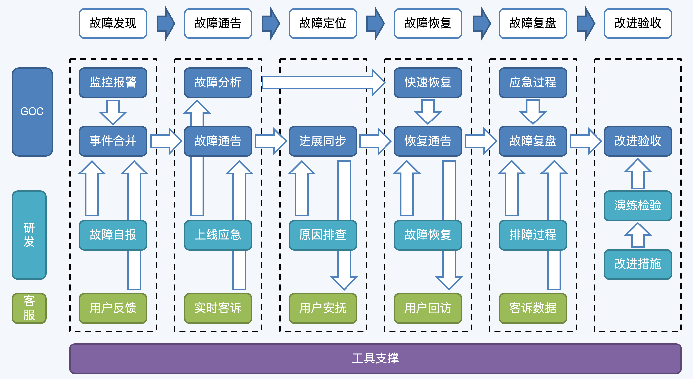
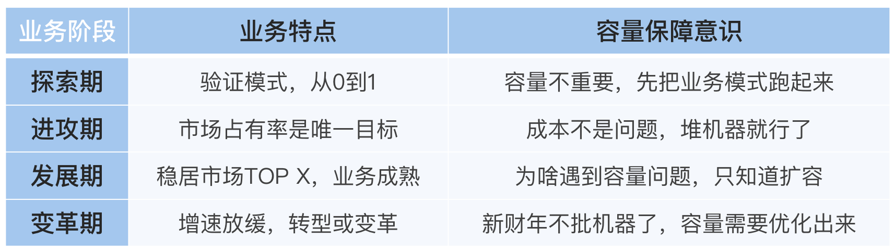
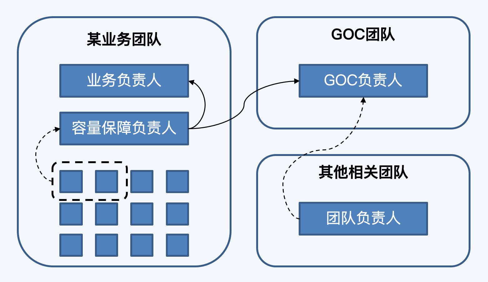

- 00 开篇词 互联网时代，人人肩负容量保障的职责.md.html
- 01 容量保障的目标：容量保障的目标是什么？该如何度量？.md.html
- 02 容量测试与验证：怎样科学实施容量测试？.md.html
- 03 容量指标分析经典5问：响应时间真的是越短越好吗？.md.html
- 04 容量治理的三板斧：扩容、限流与降级.md.html
- 05 全链路压测：系统整体容量保障的“核武器”（上）.md.html
- 06 全链路压测：系统整体容量保障的“核武器”（下）.md.html
- 07 工具进化：如何实现一个分布式压测平台.md.html
- 08 容量预测（上）：第三只眼，通过AI预测服务容量瓶颈.md.html
- 09 容量预测（下）：为不同服务“画像”，提升容量预测准确性.md.html
- 10 浅谈排队论：数学之美，通过建模计算容量.md.html
- 11 与时俱进：云原生下的容量保障新趋势.md.html
- 12 大促容量保障体系建设：怎样做好大促活动的容量保障工作（上）.md.html
- 13 大促容量保障体系建设：怎样做好大促活动的容量保障工作（下）.md.html
- 14 容量保障组织建设：容量保障需要什么样的团队？.md.html
- 15 小公司也能做好容量保障：建设经济实用型的容量保障体系.md.html
- 加餐 学习容量保障的那些经典资料.md.html
- 结束语 做时间的朋友，成功是持续累积而成的.md.html
- 捐赠
14 容量保障组织建设：容量保障需要什么样的团队？
你好，我是吴骏龙。
前面我们谈到的容量保障话题更多是集中在技术领域，其实容量保障本身并不是单一的技术命题，其背后的组织建设也是一个很重要的因素，因为它牵扯的团队和人员实在是太多了。
我以大促活动为例，通过下面这张图可以看到，互联网公司的主要职能角色几乎都参与到了大促容量保障的各项工作中，这其中还没有包含财务、HR等支持性角色。那么多角色共同做同一件事，组织建设显然是非常重要的工作。

但现实情况是，有的公司对于容量保障的组织建设其实并不重视。我见过有创业公司直接粗暴地拉出一个独立的容量保障团队，并将所有容量相关的工作全部堆砌到这个团队，却不去考虑建立机制联动各个团队的力量，结果导致这个团队工作的非常痛苦，而容量保障的全员意识依然没有建立起来。
在今天这一讲中，我会与你分享一些大厂在容量保障组织建设中的优秀实践，也会解答一些典型的问题和困惑，希望通过今天的讲解，能让你对容量保障的组织建设有新的认识。
容量保障需要什么样的团队？
这是一个首当其冲的问题，我们究竟需要建立一支什么样的团队去保障容量呢？
顺着上面的讨论，我并不推荐去建立一个通吃所有容量保障工作的团队，达到所谓的闭环效果。虽然我自己长期负责的就是容量保障团队，但我的团队的工作重心除了全链路压测和容量预测以外，更多是通过制度建设和流程规范，去联动公司的各个技术团队共同进行容量保障，而不是单打独斗。
我所认同的优秀实践是：容量保障需要有团队去建设和统筹，这个团队最大的价值在于，通过自身的输出（工具、流程、规范等）去推动公司整体的容量保障水平和意识的提升。 这个团队的组织形式是多样的，基于SRE团队（Site Reliability Engineering，网站稳定性团队）和容量测试团队（或者叫性能测试团队）的做法在行业内都有一些成功的案例，下面我谈一下我的经历和思考。
1.建立GOC团队
GOC是由运维和技术运营所发展起来的独立团队，全称是Global Operations Center，中文名叫“全球运营指挥中心”，承担全局应急、指挥和调度工作，这里的“全球”泛指全局的意思，不一定要跨国服务。
GOC团队的组织形式在2012年由阿里巴巴开始进行尝试，将当时散落在各团队的监控体系、监控中心执行标准和流程规范进行了统一，取得了不错的效果。到了2015年，GOC进一步明确了定位，负责管理生产环境所有问题，打通实时监控、发现、通告、快速恢复、事后复盘、落实全生命周期管控，注重监控运营效率与大数据分析，快速定位与恢复能力。
这里对GOC的部分解读我参考了阿里的分享，如果你感兴趣的话可以看看这篇文章。
GOC是典型的“分久必合”的组织产物，各个业务团队的“小运维”形式在组织建设初期的效率和执行力是非常强的，但随着全公司团队规模的逐渐扩大，缺乏集中管控造成“重复造轮子”的现象就日益突出，直到有一天发现忍无可忍后，必须要有一个集中式的组织接管这些共性的工作部分，这种情况在互联网公司是非常常见的。
集中式组织管理形式最大的优势在于标准化，最大的劣势在于脱离一线，因此需要扬长避短。针对容量保障工作，GOC比较适合作为作曲家和指挥家的角色，制定容量保障规范，统一跟进线上各种容量风险，在大促期间协调各个相关团队编写作战手册，组织预案演练，牵头快速应急等工作。当然，有的公司会组建SRE团队来做这些事情，其本质也是类似的。
如下图所示，我们以容量故障的线上应急为例，看一下GOC团队是如何与研发团队和客服团队联动工作的。

如果没有GOC团队作为大脑指挥，很难想象这样的流程能够顺畅执行。GOC的组织形式很好的发挥了集中式团队的统一管理优势，GOC本身并不直接介入技术细节，而是指导和推动相应的业务技术团队。
可以想象一下，老式的绿皮火车是由火车头作为动力源牵引各节车厢的，而新式的动车组列车的每节车厢都有动力源，车头的作用只是引导方向。GOC就是这列动车组的车头，这非常符合我所提倡的“全民保障”的实践方式。
2.是否需要独立的容量/性能测试团队？
我们顺着GOC团队的建设思路再进一步思考，容量测试团队是否也有必要化零为整，变成一个独立的横向支撑团队呢？我所经历过的公司有的是，有的不是，这个问题的本质其实是需要阶段性考量的，我把开篇词中的一张表格替换成容量保障意识的内容再回顾一下，来看一看有什么启发。

很幸运的是，我几乎经历过大型电商的所有这四个业务阶段，深深感受到了公司管理层对于容量保障工作的思维变迁。在业务探索期，所有人关心的都是业务行不行，我们能不能活下去；在业务进攻期，我们全站的平均CPU利用率还不到10%，申请服务器从来不设卡；到了业务发展期，我讲的最多的话就是“不要简单扩容，先看看服务有没有优化的空间”；而到了业务变革期，CPU利用率长期低于某个水位是要被挑战的，无脑的扩容申请一般都会被拒绝。
回到最初的问题，有没有必要建立一个集中式的容量测试团队，是需要根据业务发展的阶段做判断的。
我认为在探索期和进攻期，无论哪种形式都不会有太大的问题，在发展期可以考虑分而治之的思路，但在变革期一定要建立一个集中式的容量测试团队，因为服务优化和容量治理，必须要有一个有实权的团队牵头和监督，并提供统一工具支撑，否则很容易沦为上有政策下有对策的局面。当然，这个容量测试团队不一定要很大，甚至可以是GOC团队或SRE团队的一部分。
总结一下，容量保障工作需要有团队去建设和推动，将其辐射至整个公司。GOC的组织形式是阿里应用的比较成功的例子，不仅仅能对接容量保障的各项工作，还能从制度和流程上进行规范。关于是否需要独立的容量测试团队，我们要用阶段性的眼光看待这个问题，希望能给你带来启发。
谁为容量负责？
有了团队，下面就要明确责任，那么谁来为容量负责呢？是不是由GOC或容量测试团队来负责呢？
首先，单一角色负责制一般是行不通的，除非团队很小，因为容量保障牵扯的角色太多了，很难有一个人或一个团队能carry全场，即便是上面提到的GOC或容量测试团队，也不可能单独解决所有容量问题，自然也无法为容量保障负全部责任，否则就违背了权责对等的原则，这是不长久的。
虚拟团队也许是一种思路，由GOC牵头，各个业务团队的架构师和容量测试人员共同参与，组成一个容量保障虚拟团队，共同完成容量保障工作。这个虚拟团队中的人员有一部分共同的KPI，并受GOC统一管理。
在我的实际工作经验中，为了让容量保障团队更有抓手，采用过“虚实结合”的方式。每个业务技术团队确保有一个容量保障负责人，可以是架构师或资深研发人员，他们分别向业务负责人和GOC负责人双实线汇报，定义明确的目标和产出。
这位容量保障负责人遵循“首问负责制”，即对服务容量有第一手责任，为了支撑这个责任，每个业务技术团队约定不少于15%的人力由其统筹，作为开展工作的人力资源。容量保障的其他参与方依然保留在各业务团队的汇报关系，但有一部分KPI对应容量保障职责，由GOC团队根据客观数据进行打分。这样，就形成了有层次的团队负责制度，对各个职能角色也有一定的授权和约束。

这种“虚实结合”的方式，你可以参考，如果有条件，也可以试着在你的团队中应用。
如何运营好容量保障团队？
说完了团队和职责，我们再来聊聊如何经营好这个团队，其中我想与你分享两个不错的实践方式，分别是：激励措施和竞争模式。
无论容量保障团队以何种方式组织，激励措施（也包括惩罚措施）都是必不可少的部分，正确的激励手段能够激发团队的动力和上进心，使其产出最大化；适当的惩罚措施能够让团队及时纠正错误，在未来做得更好。
有一段时间，我们为了鼓励各业务团队投身服务性能优化，避免简单扩容，推行了一个政策：如果在一个大业务团队中，有一个服务通过优化手段能够缩容一定的资源，那么这部分资源不会被回收，而是可以用到这个大业务团队的其他服务中，甚至还会奖励一部分资源。
这种共享资源配额的激励做法，起到了立竿见影的效果，业务团队不再纠缠于为何不给我扩容资源，而是想尽办法榨取服务容量的可优化之处，以应对业务自然增长带来的服务资源压力。
定期组织一些轻松诙谐的仪式，将奖惩措施融入其中，也是不错的团队激励方式。比如，举办“红烂草莓”的评选活动，根据服务容量的表现情况，结合高等级评委的打分，评选出若干个做得好的“红草莓”和做得差的“烂草莓”，在部门例会时进行颁奖。在聚光灯下，做得好的员工能够保有高度的荣誉感，对做得不好的员工也能够有所警醒。
经营容量保障团队的第二个优秀实践是引入竞争模式，可以在各个业务域进行横向对比，但是要小心度量标准的公平性，比如有些业务服务可能不是CPU密集型的，如果以CPU利用率水位作为评判标准就不是一个好点子。
坦白说，依赖固定指标对容量保障工作的好与坏进行度量，很难做到完全没有偏颇，我的经验是直接以结果说话，先根据每个业务团队的规模和服务特点给予一定的容量事故配额，在一个时间周期内按照线上发生的容量类事故的个数和严重程度，进行相应的配额扣减，最终形成反映容量保障优劣的“容量健康分”，这个分数就是相对客观的度量标准，分值越接近配额的初始值，最终成绩就越好。
如果你是管理者，那么善用激励措施和竞争模式，就能够在团队内形成良性循环，将团队的战斗力最大化的发挥出来。
总结
容量保障作为一个多角色参与的工作，组织建设必不可少，在这一讲中，我与你分享了我的容量保障组织建设经验，也批判了一些不恰当的做法。
容量保障团队不应该是一个包干团队，它应该是一座桥梁，连接着各个技术团队和其他职能团队，协同各方共同保障容量安全。 基于这个理念，我与你探讨了GOC和容量测试团队的组织形式，并分析了在公司发展的不同阶段，容量测试团队的形式会有哪些不同。
接下来，从职责的角度，我分析了更大范围的组织建设形式，包括虚拟团队和双实线汇报的方式，它的目的，是在权责对等的情况下，更好的明确每个人的权利，以及所承担的责任。
最后，团队运营是重中之重，我介绍了激励措施和竞争模式这两个不错的实践方式。奖惩分明，良性竞争，有助于推动团队更好的输出力量。
课后讨论
你的公司目前是由哪个团队或哪些人来负责容量保障工作的，你觉得当前的组织形式有什么值得改进的地方吗？或者，有什么你认为做的特别好的地方，值得推广的吗？欢迎与我交流你的经验。
© 2019 - 2023 Liangliang Lee. Powered by gin and hexo-theme-book.